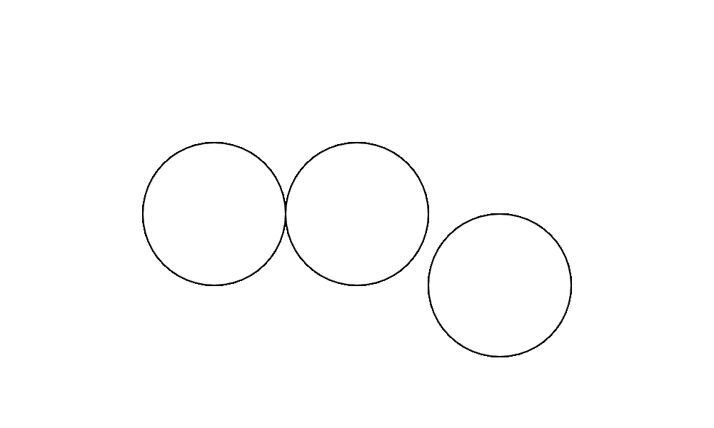

Your sketch:
A great way to get comfortable coding is to tinker with some existing code to learn what it does.
You'll create this image:

You're not expected to write code from scratch yet (we haven't told you how!). We have prepared some code for you to tinker with:
You'll notice that the code doesn't create the image above. There's only one circle.
Find the line of code that creates the circle. It looks like this: circle(250, 150, 100);
Copy the entire line of code (including the semicolon) and paste it onto the line below. Now there are two circles, but you'll only see one because they are on top of each other.
Each line of code that draws a circle has three numbers. The first two numbers set the circle's position and the last number sets its size. Choose one of the circles and change its first number to 150. You should see two circles right next to each other.
Make another circle as you did before: copy and paste one of the existing circles. Set its first number to 350 and its second number to 200.
Now you should see three circles in the same positions as the expected image above. Run the check-exercise1-1.html file to check your work. You should see that all tests have passed. If not, compare your code to the code in the hint below or ask for help.
Now try changing the numbers to create different arrangements of circles. Below are some things to try. Feel free to try other things. The goal is not to get the right answers but to develop a sense of what the code does and how to change it. You can always reset your code by copying the original code from the starterCode folder or the hint.
Tinkering will cause the automated tests to fail. That's fine!
You only need to edit sketch.js.
We won't normally give you the answer during practical, but as it's your first exercise, here's the completed code to create the expected image.
function setup() {
createCanvas(500, 300);
}
function draw() {
circle(250, 150, 100);
circle(150, 150, 100);
circle(350, 200, 100);
}